Префектура Фукуока · деревня Тохо · ремёсла и ночлег
Деревня Тохо: керамика Коисивара, посуда Такатори и старый дом над рисовыми террасами
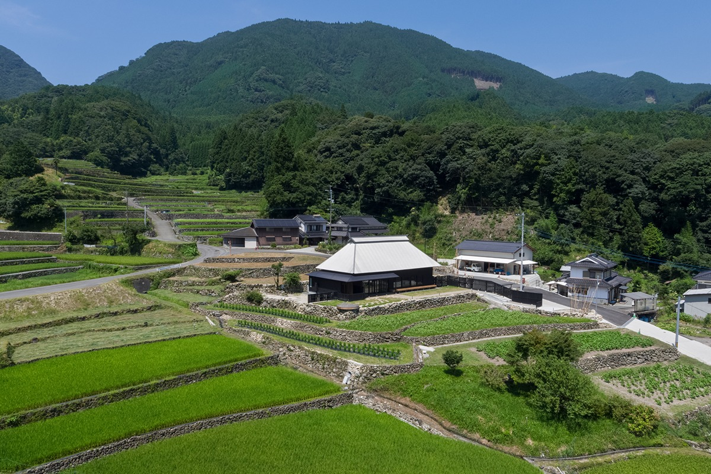
В горах на востоке префектуры Фукуока, недалеко от границы с Оитой, лежит деревня Тохо. Здесь около полусотни гончарных мастерских, а над рисовыми террасами можно снять на ночь целый старый дом.
Края
Глина, лес и вода
Река Тикуго течёт с гор Кюсю через префектуры Оита и Фукуока, и по её берегам издавна живут гончары. Всё, что нужно для керамики, здесь под рукой: горы дают глину и дрова для печей, а сила воды когда-то приводила в движение молоты, которыми дробили глину. На этих ресурсах выросла посуда, которой пользуются до сих пор, и в мастерских бассейна Тикуго её всё так же делают для повседневной жизни.
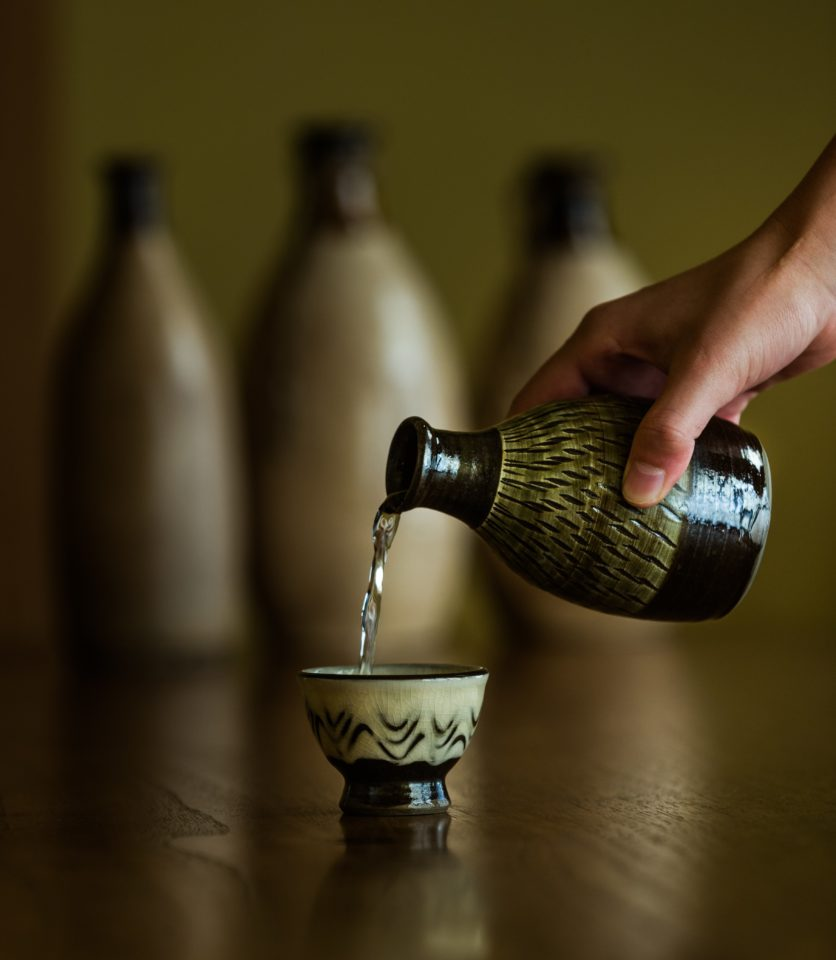
Река славится не только посудой. Чистые подземные воды и плодородная земля сделали её берега краем сакэ и сётю, а речная рыба и разнообразные овощи создали местную кухню. Самый удобный способ всё это попробовать: заехать в деревню Тохо, где сходятся две гончарные традиции.
Посуда князей
Такатори: тонко, как фарфор
Керамика Такатори была официальной посудой княжества Курода, правившего землёй Тикудзэн, нынешним западом префектуры Фукуока. В Коисивару, считается, её принёс Хатидзо Такатори второго поколения: в XVII веке он перебрался сюда из Ногаты, города в той же префектуре.
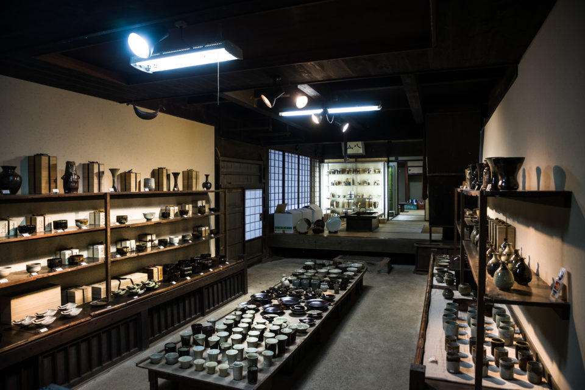
Для этой керамики берут глину очень тонкого помола, и изделия получаются тонкими и лёгкими, почти как фарфор. Секреты ремесла по-прежнему передают от отца к одному сыну, и главная мастерская рода, «Такатори-яки Сокэ», делает прежде всего изысканную посуду для чайной церемонии.
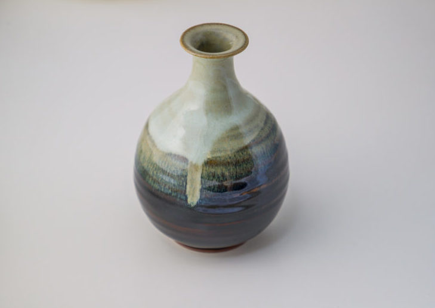
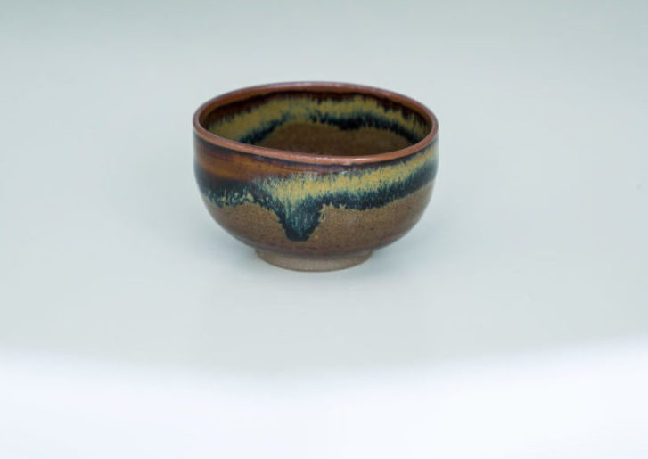
«Такатори-яки Сокэ»
- Адрес
- префектура Фукуока, уезд Асакура, деревня Тохо, Коисивара, Цудзуми, 2511
- Телефон
- +81 946-74-2045
Посуда для всех
Коисивара: узоры резцом и кистью
Керамику Коисивара обжигают примерно в 50 мастерских деревни Тохо. Её история началась около 350 лет назад, когда внук Хатидзо Такатори поселился здесь и построил свою печь. Так у одной традиции появилась простая и тёплая сестра для крестьянского стола.
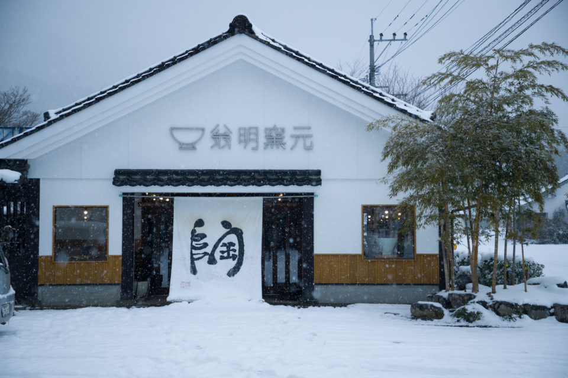
Узнать эту посуду можно по узорам. «Тобиканна» это частые насечки, которые оставляет пружинящий резец на вращающемся круге. «Хакэмэ» это след широкой кисти, «кусигаки» прочерчивают гребнем, а при «нагасигакэ» и «утикакэ» глазурь льют или брызгают на изделие. Многие молодые мастера Коисивары опираются на эти техники, но ищут и свой стиль.
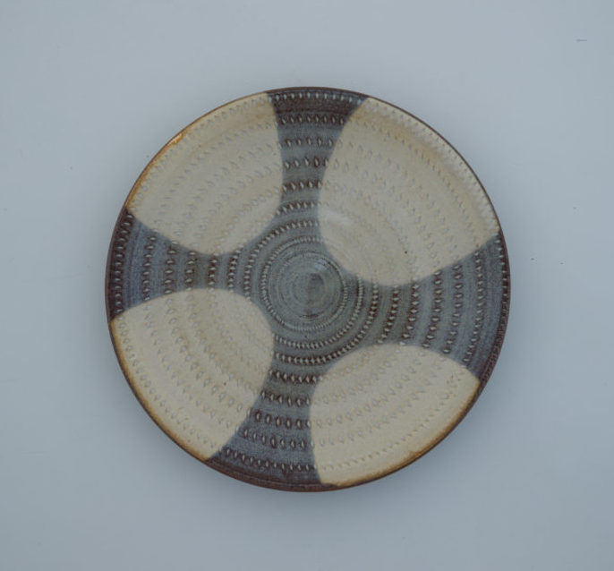
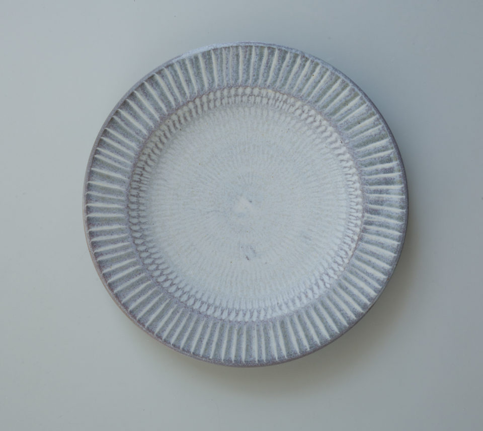
«Омэй-гама»
- Адрес
- префектура Фукуока, уезд Асакура, деревня Тохо, Коисивара, 1126-1
- Телефон
- +81 946-74-2186
Ночлег
«Антагэ»: дом над террасами
В той же деревне Тохо, в районе Хосюяма, в июле 2020 года открылась вилла «Антагэ». Её устроили в старом деревенском доме, которому в год открытия было 132 года. Дом стоит над рисовыми террасами: около 400 полей, которые возделывают уже примерно 400 лет. Эти террасы входят в список ста лучших террасных полей Японии.
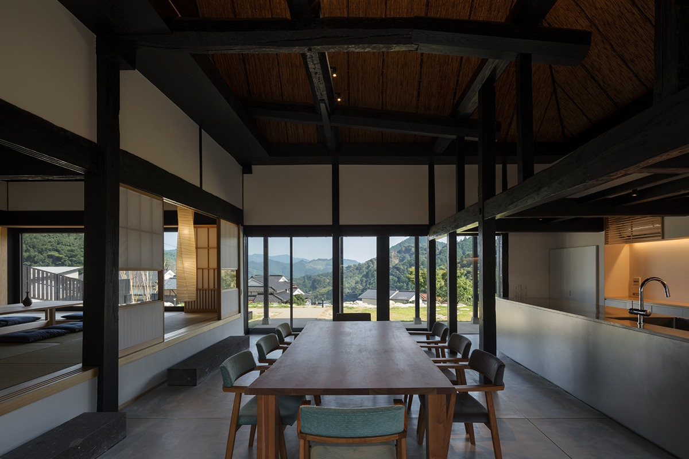
Вилла сдаётся одной компании в день. При реконструкции сохранили старые балки и столбы, а вокруг них устроили комнаты в духе японской классики с современными деталями.
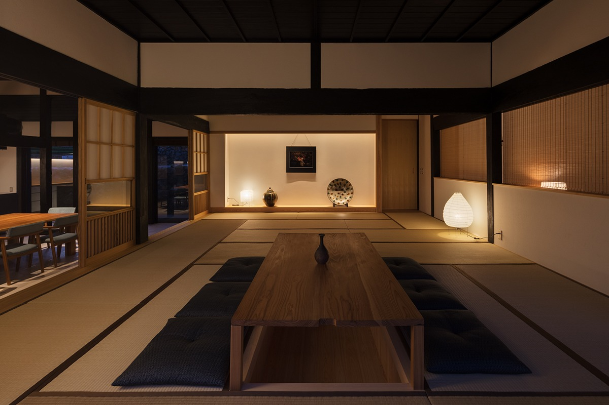
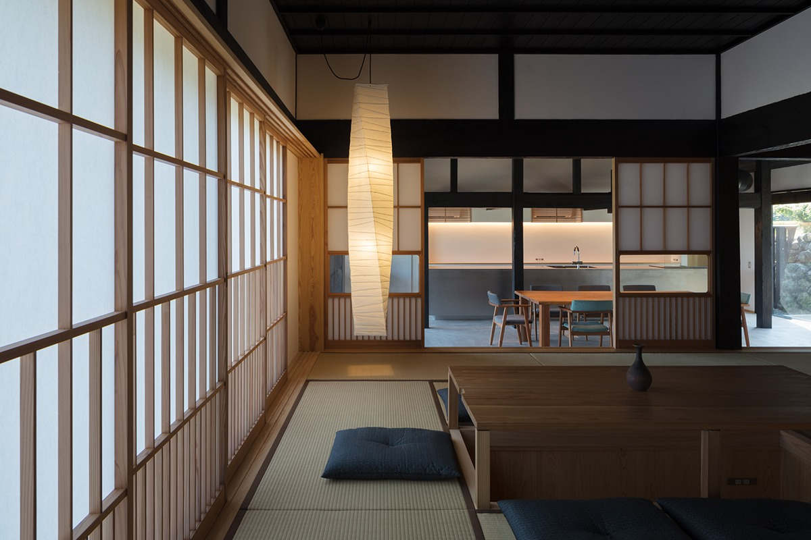
Готовить можно самим: в доме большая кухня со стойкой, посуда, утварь и приправы, а во дворе можно устроить барбекю. Вся посуда здесь из керамики Коисивара, так что поездка по мастерским продолжается и за столом.
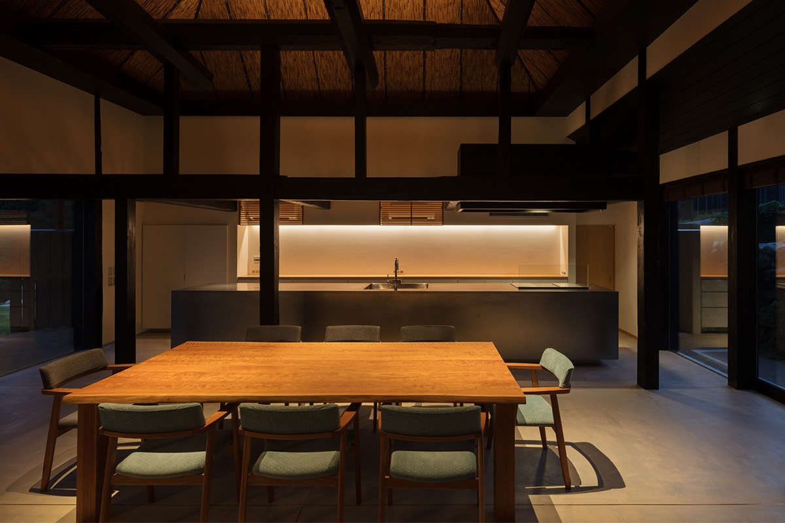
Еду можно и заказать, не позже чем за пять дней. Ужин готовит местный повар из местных продуктов: блюда из курицы «Косё-дори», местные грибы сиитакэ и конняку, сезонные овощи, рис с этих террас и суп мисо, а в конце десерт. Для всех блюд берут воду родника Ивая, одного из ста лучших источников Японии. Утром подают рис, суп мисо, жареную рыбу, японский омлет и соленья. В 2020 году ужин стоил 4000 иен (детям 2000 иен), завтрак 1500 иен, без налога.
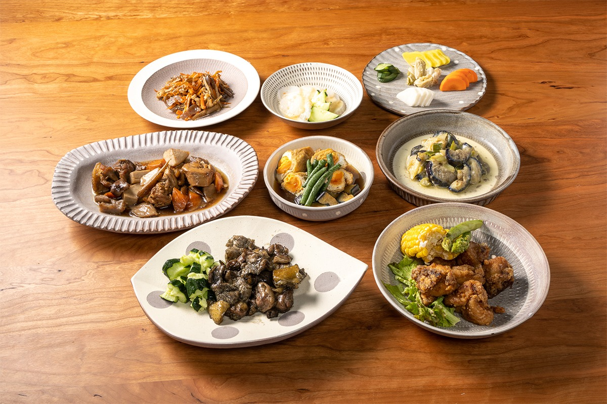
В спальне стоит огромная двуспальная кровать, и в тишине деревни спится крепко.
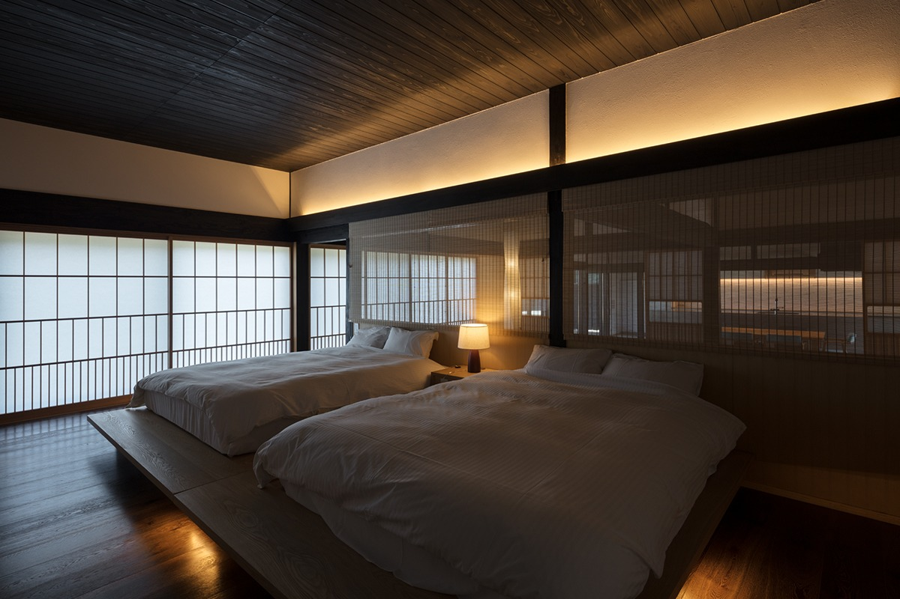
Ванна выложена натуральным камнем и японским кипарисом хиноки, а за ней открытое пространство и вид на горы. Ночью над террасами высыпают звёзды, и в этой картине есть что-то давно знакомое, как в детстве у бабушки в деревне.
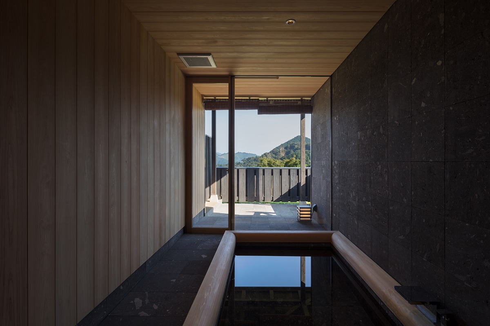
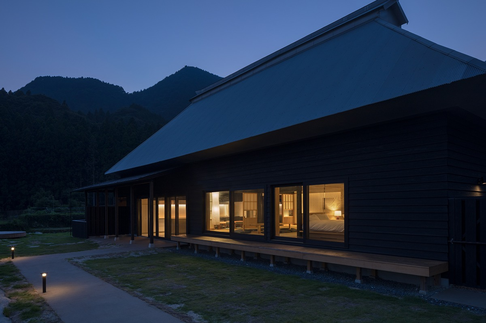
Вилла принадлежит кемпингу Ивая: это небольшой лагерь в квазинациональном парке Яба-Хита-Хикосан. В 2017 году его повредили сильные ливни на севере Кюсю, и какое-то время он был закрыт, но местные жители восстановили его, и в 2019 году кемпинг открылся снова. В 2020 году ночь на вилле стоила 30 000 иен плюс 5000 иен с каждого гостя (школьникам 2500 иен, дошкольникам бесплатно), без налога; сверху берут налог префектуры на проживание. Бронь принимают за три месяца.
Вилла «Антагэ»
- Адрес
- префектура Фукуока, уезд Асакура, деревня Тохо, Хосюяма, 5430
- Телефон
- +81 946-23-8423 (бронирование 12:00–17:00)
- Выходные
- новогодние праздники
- Заезд / выезд
- заезд 15:00–17:00, выезд до 11:00
- Цены / Вход
- 30 000 иен за дом плюс 5000 иен с человека, без налога
Фото: Хиромаса Оцука, Акито Отиай.